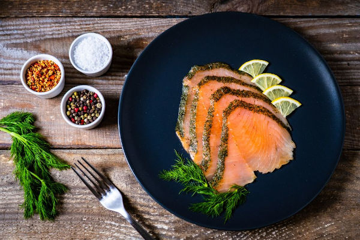

Preparation Time: 15 Mins
Cook Time: 4 Hours
Aditional Time: 16 Hours
Total Time: 20 Hours 15 Mins
Servings: 4 Servings

Ingredients
- 2 large salmon filets
- 4 cups water
- 1 cup brown sugar
- 1/3 cup kosher salt
- togarashi
Salmon
Brine
Seasoning
Instructions:
Method
- Make sure if you are using frozen fish that it is completely thawed before brining. Remove pin bones with tweezers.
- Combine brine ingredients until the sugar is dissolved, and place into a large ziplock baggie or large covered container. Place your cleaned, thawed salmon into the brine, and refrigerate for 16 hours.
- Remove the salmon from the liquid, rinse, and pat dry with paper towels. Let sit out in a rack in the fridge, uncovered, for 2-4 hours for the pellicle to form. DO NOT SKIP THAT STEP.
-
Seasoning
Season the salmon with the togarashi.
-
Smoking
Turn your smoker to smoke to get the fire started, and place the salmon on a cooking rack that's been sprayed liberally with cooking spray
Place the rack on the smoker, and close the lid.
Smoke for 4 hours, and don't let them smoker get above 180° or fall under 130°.
-
Serve
Remove from the grill and serve warm with crackers, or let it cool to room temp and then wrap tightly and keep in the fridge for up to a week. You can also vacuum seal and freeze.